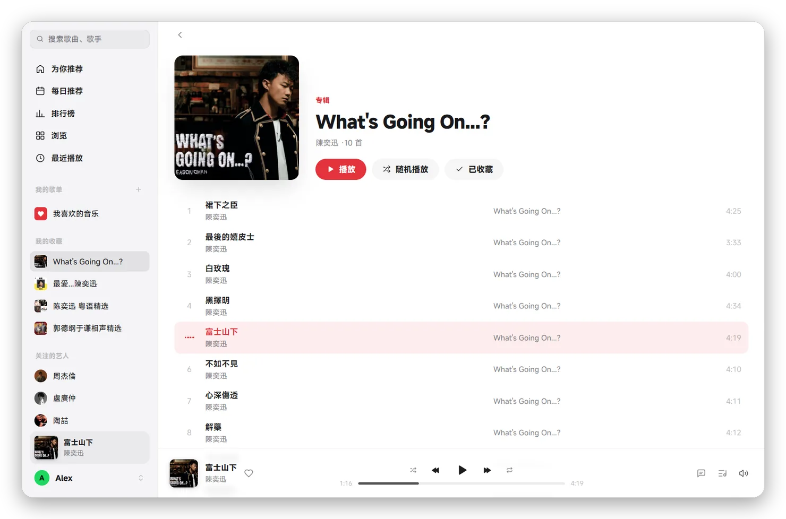
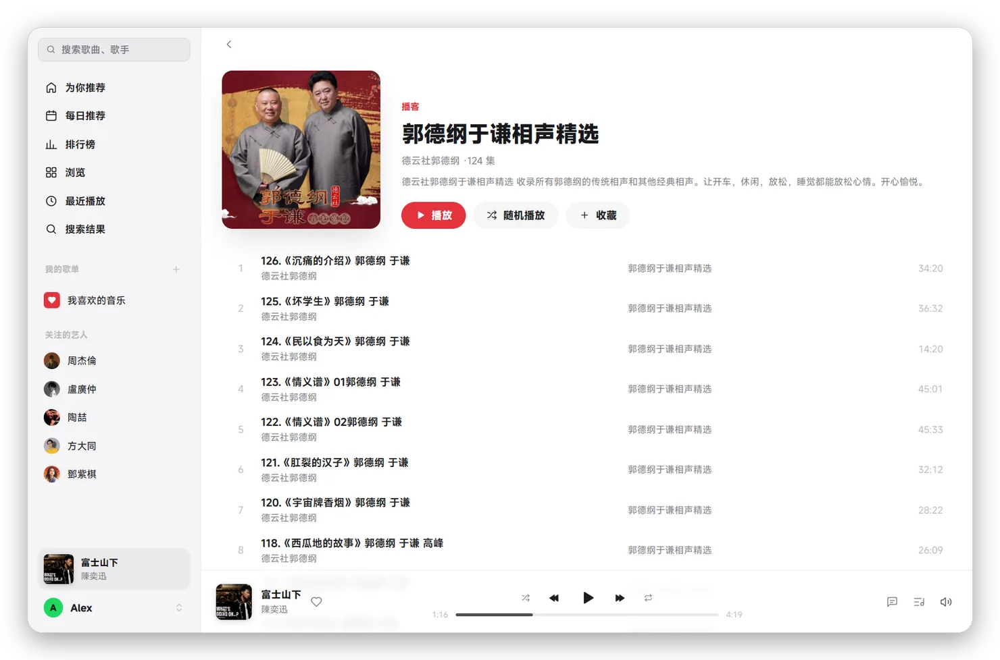
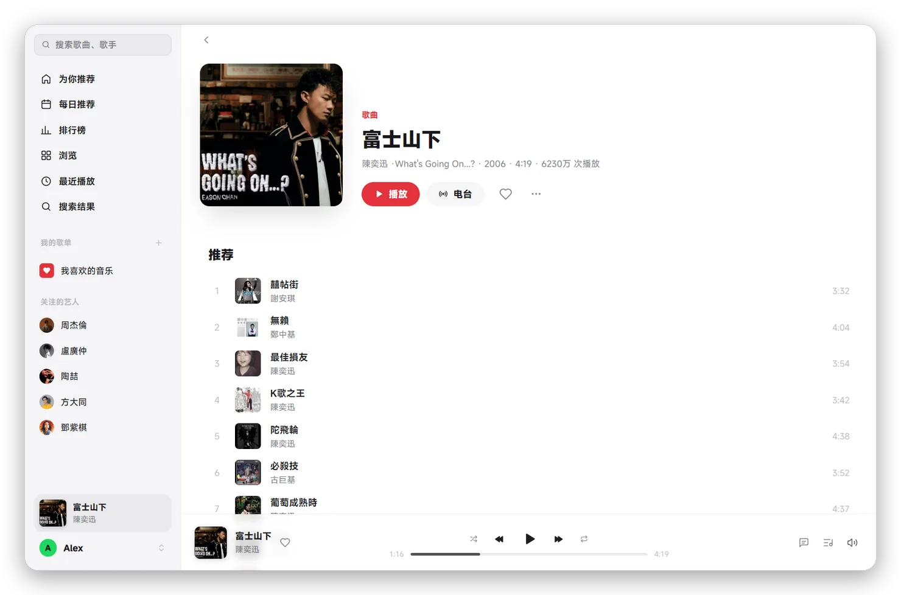
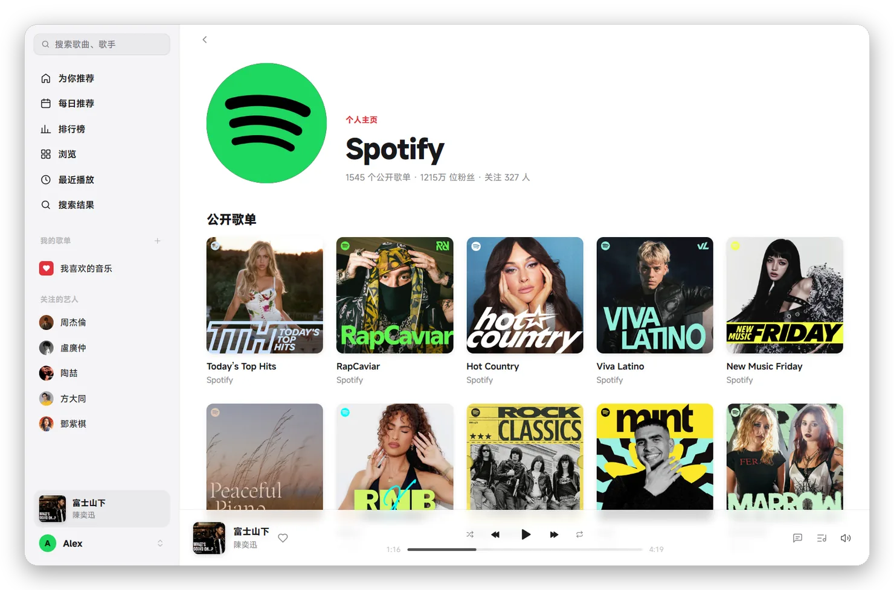

像个桌面软件。
界面是 MyGo 画的原生界面，不是套一层网页。侧栏、全屏播放页、律动舞台、macOS 刘海播放器、系统媒体键、全局快捷键、深浅色主题都有；关窗口收进托盘接着放。
MYSPOTIFY · GO 原生非 ELECTRON · 开源 · WINDOWS / MACOS
Go + MyGo 原生界面，安装包小于 10 MB。内置桌面悬浮歌词与翻译、MV 和视频播客、均衡器与设备接力；免费账号也能整首播放，不登录也能先逛。
个人开源项目（AGPL-3.0），和 Spotify 没有任何关系，使用第三方客户端账号有被限制的风险。先看风险说明




界面是 MyGo 画的原生界面，不是套一层网页。侧栏、全屏播放页、律动舞台、macOS 刘海播放器、系统媒体键、全局快捷键、深浅色主题都有；关窗口收进托盘接着放。
打开就能搜索，看首页、歌单、专辑和艺人页：MySpotify 像网页播放器一样自己取一个访客身份。要听歌再登录。
登录走 Spotify 官方的登录页。音频由系统网页组件自带的 DRM 模块解密，和你在浏览器里听是同一条路：免费账号 128k AAC，Premium 可在设置里开启 256k 高音质。
Spotify 没有的去网易云和 LRCLIB 找，核对歌名和时长不乱配，外语歌自动带中文翻译。Mac 和 Windows 支持桌面悬浮歌词：封面取色高亮、锁定鼠标穿透、暂停自动隐藏。了解桌面歌词细节
有 MV 的歌带个小标，点它就放，播放栏里也能随时切换。可以放在封面的位置、铺满窗口或者全屏，下方跟着当前这句歌词，还能用 [ / ] 微调 0.5 秒偏移。
视频播客点一下就看画面，支持 0.5×–3× 变速不变调倍速播放。逐字稿像歌词一样跟着滚，一个词一个词亮起，点一句就跳过去。
TRACKLIST
COMPARISON
把差异摊开说清：MySpotify 主打原生轻量、桌面歌词和无追踪；无损音质、离线下载和官方合规保障请继续使用 Spotify 官方客户端。查看完整对比（含 Spicetify / 终端客户端）
| 对比项 | MySpotify (Go / MyGo) | Spotify 官方桌面客户端 | Spotify 网页版 |
|---|---|---|---|
| 界面技术 | Go + MyGo 原生绘制（非 Electron） | CEF（内置 Chromium 浏览器引擎） | 依赖浏览器标签页 |
| 安装包体积 | < 10 MB | 约 150–250 MB | 免安装 |
| 常见内存占用 | 浏览约 190 MB，播放增加约 60 MB | 通常 500 MB – 1 GB+ | 随浏览器标签页波动 |
| 桌面悬浮歌词 | 内置（Mac/Win，封面取色、锁定穿透、暂停隐藏） | 不支持 | 不支持 |
| 歌词补全与翻译 | Spotify + 网易云 + LRCLIB，自动匹配中文翻译 | 仅 Spotify 官方词库，无中文翻译 | 仅 Spotify 官方词库 |
| 均衡器与淡入淡出 | Windows 支持 6 段曲线 EQ（22 预设）与 0–12s 淡入淡出 | 支持 | 不支持 |
| 音质与离线下载 | 免费 128k / Premium 256k AAC；不支持离线 | 支持更高音质与 Premium 离线下载 | 128k / 256k AAC；不支持离线 |
| 数据统计与风险 | 零遥测，开源可审计；非官方有账号风险 | 官方支持无封号风险，含官方遥测 | 官方支持，免费版含广告 |
SCREENS
截图为中文界面。可在「设置 › 外观 › 语言」即时切换简体中文、English 或 Italiano，也可跟随系统。




BEHIND THE SCENES
电脑会出现在手机 Spotify 的设备列表里，点它就转到电脑放；也能直接唤醒同局域网的 Google Cast / Nest 音箱和多房间群组。
内置 6 段可拖拽曲线均衡器和 22 套预设，支持键盘微调；播放选项可开启 0–12 秒歌曲交叉淡入淡出。
支持 macOS 刘海屏迷你播放状态展示，并提供与系统「音乐」App 兼容的只读 AppleScript 接口，方便接入 Raycast、SketchyBar 等脚本。
许可证过期自动换身份重试；遇到 429 限流或 502 故障按要求等待并原位续播；断网恢复后自动接着放。
放过的歌（加密分段，原样存下）留在本机，再放更快、不耗流量。支持自定义缓存目录和上限，也能一键清除。
设置和播放记录都在本机，续期 cookies 通过 Windows DPAPI 或 macOS 钥匙串加密保存。只连 Spotify、Gravatar、网易云/LRCLIB 和 GitHub。
READ THIS FIRST
用的是网页播放器的内部接口，没有公开文档，Spotify 一改就可能坏。
Spotify 的条款不允许第三方程序访问它的服务，可能导致账号被限制或封禁。只用你自己的账号，别做商业用途。
网页版免费账号会插广告，MySpotify 不放。Spotify 很可能不喜欢这点；介意的话请用官方客户端或订阅 Premium。
解密在系统的 Widevine 或 FairPlay 模块里完成，程序拿不到密钥和解密后的内容。每次播放都要申请许可证，不能离线。
INSTALL
Apple 芯片 / Intel（实验版，尚待真机验证）
xattr -dr com.apple.quarantine /Applications/MySpotify.app。Windows 10 / 11，需要 WebView2 运行时（Windows 11 自带）
MySpotify.exe。以后的版本在「设置 › 关于」里点「更新并重启」就行，设置和登录不会丢。Linux 用户可试用实验性 .deb / .tar.gz（默认 Qt WebEngine 后端），详情见 Linux 安装说明。
FAQ
MySpotify 使用 Go 和 MyGo 原生绘制界面，不内置完整 Chromium/Electron 浏览器壳。下载安装包小于 10 MB，仅浏览时总内存占用约 190 MB，播放音乐时额外启动一个约 60 MB 的系统 DRM 解密进程；同时内置了官方客户端缺少的桌面悬浮歌词、歌词翻译、网易云/LRCLIB 歌词补全和零遥测特性。官方客户端则提供无损音质、离线下载、Jam/DJ 及官方账号保障。
支持。在 macOS 和 Windows 上点击播放栏的「桌面歌词」按钮即可开启，当前演唱的歌词会悬浮在所有窗口上方，文字随专辑封面取色逐字亮起，第二行可显示中文翻译或下一句歌词。支持锁定后鼠标穿透、暂停时自动隐藏、自定义字号颜色以及全局快捷键开关。
MySpotify 不破解 DRM，音频解密完全在系统自带的 WebView2 Widevine（Windows）或 WebKit FairPlay（macOS）模块内完成，程序无法获取密钥或解密后的媒体文件。登录直接走 Spotify 官方登录页，续期 Cookie 通过 Windows DPAPI 或 macOS 钥匙串加密保存在本地，程序没有任何统计或跟踪。
免费账号登录即可整首播放歌曲（128k AAC），不登录也可先以访客身份浏览首页、搜索和歌单。Premium 账号可在「设置 › 音质」中开启高音质（256k AAC）；若免费账号开启该选项被 Spotify 拒绝授权，会自动无缝回退为 128k 播放。无损音质和离线下载仅限官方客户端。
这首歌在你所在地区不可播，或者 Spotify 拒绝了许可证（403）。同一首在网页版也放不了的话，就是版权或地区限制问题。
什么都不用做。MySpotify 会按 Spotify 要求的时间等完，再从刚才的位置接着放。短时间里不要频繁起播，就不容易触发限流。
缓存的是 CDN 返回的加密音频分段，每次解密播放仍需要 Spotify 当场签发许可证。缓存的作用是节省流量和减少缓冲等待时间，也可在设置中自定义缓存文件夹和上限。
代理默认跟随系统代理，也可在「设置 › 网络 › 代理」填写 127.0.0.1:7890、http://…、https://… 或 socks5://…。关闭窗口默认收进系统托盘继续播放，右键托盘图标选择「退出 MySpotify」即可彻底退出。